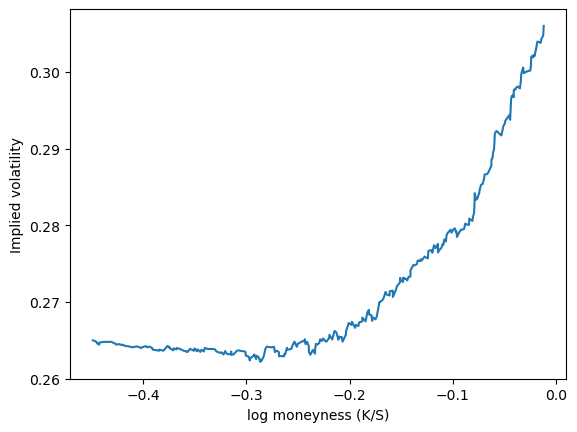
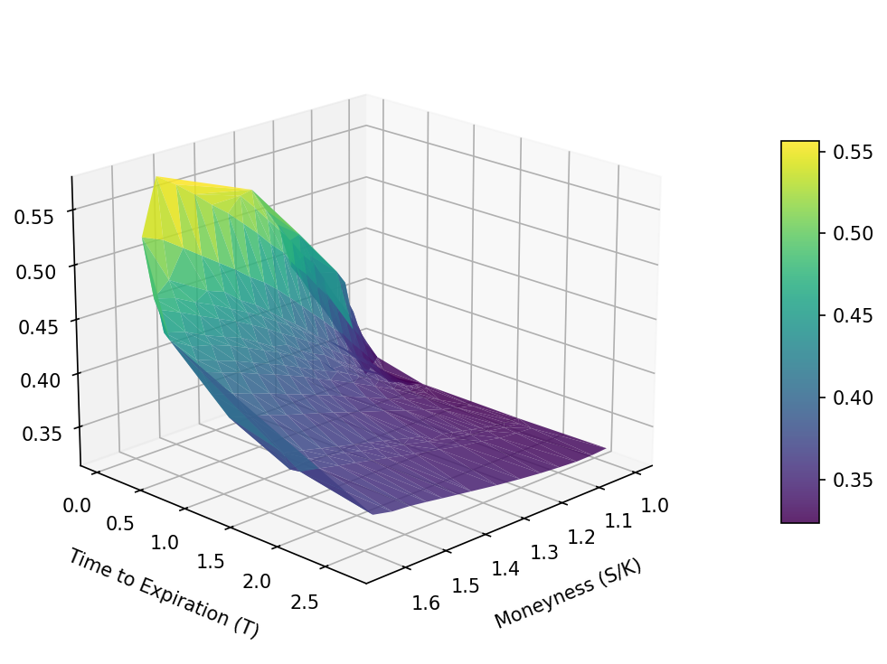
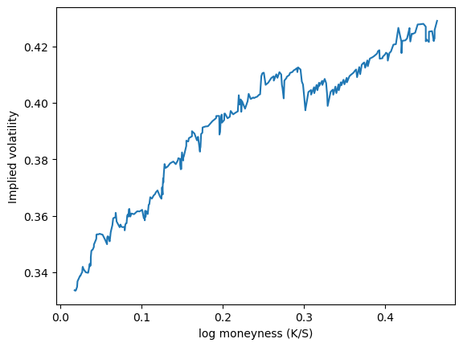
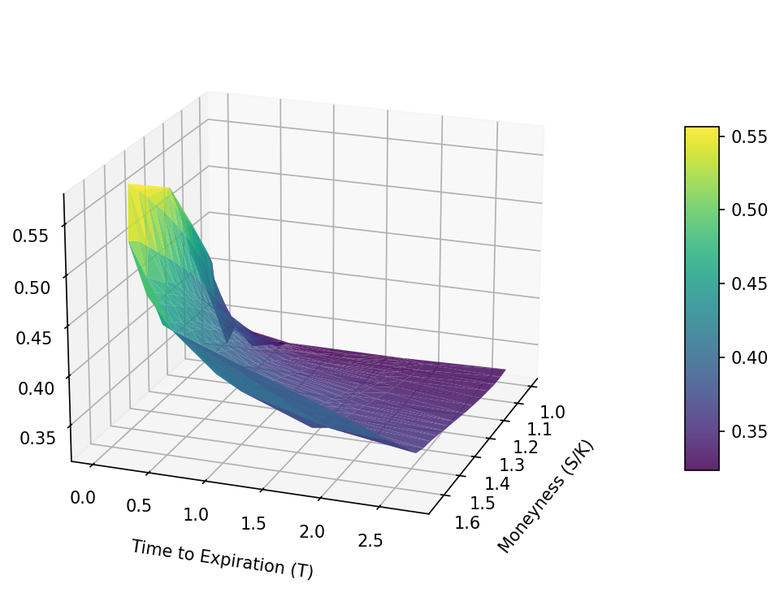

import math
import sys
import datetime as dt
sys.path.append('../cpp_pricing/build')
import pricer
import matplotlib.pyplot as plt
import pandas as pd
import numpy as np
import yfinance as yfImplied Volatility, Volatility Smiles and Volatility Surfaces
CPP Pricing Engine
Alejandro Naranjo Caraza
2026-03-01
Overview
The following code extracts data on AAPL Put / Call option contracts and uses the option pricing engine to extract implied volatilities and plot volatility smiles and surfaces. Note that Put and Call contracts are kept seperate, as are Out-of-the-Money (OTM) and In-the-Money (ITM) contracts. Additionally, contracts are filtered based on the following criteria:
Only ITM or OTM contracts are considered (not both). ITM Calls satisfy: K < F. OTM Calls satisfy: K > F where K is the strike price and F is the underlying forward price.
Contracts with excessively large margins are excluded to avoid unrealistic prices.
Only contracts that satisfy no-arbitrage conditions are considered.
The no-arbitrage bounds for calls are \begin{aligned} C_{\min} &= \max \big(F - K e^{-r T},\ 0 \big) &\quad& C_{\max} = F \end{aligned}
Note that if a Call Option’s price is below its lower no-arbitrage bound 𝐶_{min}, an arbitrageur can short the underlying forward, buy the Call Option, and use the Call to cover the short position at maturity, thereby locking in a risk-free profit.
If a Call Option’s price exceeds its upper bound C_{max}, an arbitrageur can sell the Call Option and buy the underlying forward. At maturity, the Call’s payoff will be covered by the forward position, allowing the arbitrageur to lock in a risk-free profit.
while the no-arbitrage for puts are \begin{aligned} P_{\min} &= \max \big(K e^{-r T} - F,\ 0 \big) &\quad& P_{\max} = K e^{-r T} \end{aligned}
with F = S_0 e^{(r-q) T}
Note that if a Put Option’s price is below the lower bound P_{min}, an arbitrageur can buy the underlying forward and buy the Put Option. At maturity, the Put can be exercised to sell the underlying forward at the strike price, generating a risk-free profit.
If a Put Option’s price exceeds its upper bound P_{max}, an arbitrageur can sell the Put Option and sell the underlying forward. At maturity, the Put’s obligation will be offset by the forward position, resulting in a risk-free profit.
Library Import
Import Options Data
aapl = yf.Ticker("AAPL")
expiries = list(aapl.options)
current_price = aapl.fast_info['lastPrice']print('Expiry dates:')
for exp in expiries:
print('\t',exp)
print('Current price:\t',round(current_price,2))Expiry dates:
2026-03-30
2026-04-01
2026-04-02
2026-04-10
2026-04-17
2026-04-24
2026-05-01
2026-05-15
2026-06-18
2026-07-17
2026-08-21
2026-09-18
2026-10-16
2026-11-20
2026-12-18
2027-01-15
2027-03-19
2027-06-17
2027-12-17
2028-01-21
2028-03-17
2028-12-15
Current price: 248.8today = dt.datetime.today().replace(hour=0, minute=0, second=0, microsecond=0)
S0 = current_price
r = 0.045
q = 0.005
calls_lst = []
puts_lst = []
for expiry in expiries:
opt = aapl.option_chain(expiry)
calls = opt.calls.copy()
puts = opt.puts.copy()
expiry_date = dt.datetime.strptime(expiry, "%Y-%m-%d")
T = (expiry_date - today).days / 365.25
if T<= 0:
continue
F = S0 * np.exp((r - q) * T)
calls['T'] = T
puts['T'] = T
calls['F'] = F
puts['F'] = F
calls['moneyness'] = F / calls['strike']
puts['moneyness'] = F / puts['strike']
calls['logMoneyness'] = np.log(calls['moneyness'])
puts['logMoneyness'] = np.log(puts['moneyness'])
calls_lst.append(calls)
puts_lst.append(puts)
all_calls = pd.concat(calls_lst, ignore_index=True)
all_puts = pd.concat(puts_lst, ignore_index=True)all_calls.info()<class 'pandas.DataFrame'>
RangeIndex: 1239 entries, 0 to 1238
Data columns (total 18 columns):
# Column Non-Null Count Dtype
--- ------ -------------- -----
0 contractSymbol 1239 non-null str
1 lastTradeDate 1239 non-null datetime64[s, UTC]
2 strike 1239 non-null float64
3 lastPrice 1239 non-null float64
4 bid 1239 non-null float64
5 ask 1239 non-null float64
6 change 1239 non-null float64
7 percentChange 1239 non-null float64
8 volume 1213 non-null float64
9 openInterest 1239 non-null int64
10 impliedVolatility 1239 non-null float64
11 inTheMoney 1239 non-null bool
12 contractSize 1239 non-null str
13 currency 1239 non-null str
14 T 1239 non-null float64
15 F 1239 non-null float64
16 moneyness 1239 non-null float64
17 logMoneyness 1239 non-null float64
dtypes: bool(1), datetime64[s, UTC](1), float64(12), int64(1), str(3)
memory usage: 165.9 KBall_calls.head()| contractSymbol | lastTradeDate | strike | lastPrice | bid | ask | change | percentChange | volume | openInterest | impliedVolatility | inTheMoney | contractSize | currency | T | F | moneyness | logMoneyness | |
|---|---|---|---|---|---|---|---|---|---|---|---|---|---|---|---|---|---|---|
| 0 | AAPL260330C00200000 | 2026-03-23 13:42:46+00:00 | 200.0 | 53.42 | 46.75 | 50.65 | 0.000000 | 0.000000 | 10.0 | 16 | 1.894532 | True | REGULAR | USD | 0.005476 | 248.854503 | 1.244273 | 0.218551 |
| 1 | AAPL260330C00225000 | 2026-03-27 17:31:37+00:00 | 225.0 | 25.72 | 22.15 | 25.60 | -3.230001 | -11.157172 | 18.0 | 22 | 0.529302 | True | REGULAR | USD | 0.005476 | 248.854503 | 1.106020 | 0.100768 |
| 2 | AAPL260330C00230000 | 2026-03-26 14:20:36+00:00 | 230.0 | 25.41 | 17.60 | 20.65 | 0.000000 | 0.000000 | 4.0 | 3 | 0.562504 | True | REGULAR | USD | 0.005476 | 248.854503 | 1.081976 | 0.078789 |
| 3 | AAPL260330C00235000 | 2026-03-27 19:28:17+00:00 | 235.0 | 13.92 | 12.65 | 15.30 | -7.129999 | -33.871730 | 26.0 | 3 | 0.692630 | True | REGULAR | USD | 0.005476 | 248.854503 | 1.058955 | 0.057283 |
| 4 | AAPL260330C00240000 | 2026-03-27 19:36:27+00:00 | 240.0 | 9.26 | 8.30 | 10.15 | -6.969999 | -42.945160 | 110.0 | 30 | 0.500982 | True | REGULAR | USD | 0.005476 | 248.854503 | 1.036894 | 0.036229 |
all_puts.info()<class 'pandas.DataFrame'>
RangeIndex: 1081 entries, 0 to 1080
Data columns (total 18 columns):
# Column Non-Null Count Dtype
--- ------ -------------- -----
0 contractSymbol 1081 non-null str
1 lastTradeDate 1081 non-null datetime64[s, UTC]
2 strike 1081 non-null float64
3 lastPrice 1081 non-null float64
4 bid 1081 non-null float64
5 ask 1081 non-null float64
6 change 1081 non-null float64
7 percentChange 1081 non-null float64
8 volume 1034 non-null float64
9 openInterest 1081 non-null int64
10 impliedVolatility 1081 non-null float64
11 inTheMoney 1081 non-null bool
12 contractSize 1081 non-null str
13 currency 1081 non-null str
14 T 1081 non-null float64
15 F 1081 non-null float64
16 moneyness 1081 non-null float64
17 logMoneyness 1081 non-null float64
dtypes: bool(1), datetime64[s, UTC](1), float64(12), int64(1), str(3)
memory usage: 144.8 KBall_puts.head()| contractSymbol | lastTradeDate | strike | lastPrice | bid | ask | change | percentChange | volume | openInterest | impliedVolatility | inTheMoney | contractSize | currency | T | F | moneyness | logMoneyness | |
|---|---|---|---|---|---|---|---|---|---|---|---|---|---|---|---|---|---|---|
| 0 | AAPL260330P00180000 | 2026-03-20 16:21:52+00:00 | 180.0 | 0.10 | 0.00 | 0.01 | 0.00 | 0.00000 | 1.0 | 1 | 1.125004 | False | REGULAR | USD | 0.005476 | 248.854503 | 1.382525 | 0.323912 |
| 1 | AAPL260330P00200000 | 2026-03-27 19:42:44+00:00 | 200.0 | 0.05 | 0.01 | 0.04 | 0.02 | 66.66667 | 51.0 | 90 | 0.914063 | False | REGULAR | USD | 0.005476 | 248.854503 | 1.244273 | 0.218551 |
| 2 | AAPL260330P00205000 | 2026-03-24 13:30:01+00:00 | 205.0 | 0.04 | 0.00 | 0.27 | 0.00 | 0.00000 | 2.0 | 1007 | 1.017583 | False | REGULAR | USD | 0.005476 | 248.854503 | 1.213924 | 0.193858 |
| 3 | AAPL260330P00210000 | 2026-03-27 18:03:03+00:00 | 210.0 | 0.01 | 0.00 | 0.22 | -0.07 | -87.50000 | 1.0 | 6 | 0.878907 | False | REGULAR | USD | 0.005476 | 248.854503 | 1.185021 | 0.169761 |
| 4 | AAPL260330P00215000 | 2026-03-27 17:26:17+00:00 | 215.0 | 0.01 | 0.00 | 0.03 | 0.00 | 0.00000 | 2.0 | 27 | 0.601566 | False | REGULAR | USD | 0.005476 | 248.854503 | 1.157463 | 0.146230 |
Get Implied Volatility Through Pricing Engine
def getVol(data,optType):
ivs = [] # Implied vol
moneyness = [] # Moneyness (F/K)
log_moneyness = [] # Log moneyness
dtes = [] # Time to expiry
sigma = 0.1 # Default volatility (does not matter in computations)
eps = 1e-4 # Error term
# Build stock object
stock = pricer.makeStock(S0,q)
# For each quotation, calculate implied volatility
for idx, row in data.iterrows():
# Filter contracts with negative bid, ask
if row['bid'] <= 0 or row['ask'] <= 0:
continue
# Calculate price through mid between ask and bid
mid = 0.5 * (row['bid'] + row['ask'])
rel_spread = (row['ask'] - row['bid']) / mid
P = mid
K = row['strike']
T = row['T']
F = row['F']
# Skip wide spreads (avoid unreasonable prices)
if rel_spread > 0.2 or mid < 0.05:
continue
# Consider OTM only
if optType == 'c' and K <= F:
continue
if optType == 'p' and K>=F:
continue
# Simple filter for outliers
if abs(row['logMoneyness']) > 0.5:
continue
# Arbitrage-free bounds
df_r = np.exp(-r * T)
df_q = np.exp(-q * T)
if optType == 'c':
lower_bound = max(F - K * df_r, 0) # intrinsic value
upper_bound = F # max call price
else:
lower_bound = max(K * df_r - F, 0) # intrinsic value
upper_bound = K * df_r # max put price
if P <= lower_bound + eps:
continue
if P >= upper_bound - eps:
continue
# Build vanilla option and BSM model and calculate implied volatility
vanillaOption = pricer.makeVanillaOption(K,T,optType,'e')
bsm = pricer.makeBSM(vanillaOption,stock,r,sigma)
vol = bsm.impliedVol(P)
if (np.isnan(vol)) or (vol <= 0) or (vol > 2):
print("Warning. Incompatible vol found. Vol = ",vol)
continue
# Append data
ivs.append(vol)
moneyness.append(row['moneyness'])
log_moneyness.append(row['logMoneyness'])
dtes.append(T)
return ivs, moneyness, log_moneyness, dtesCall Option Volatility Smile
ivs, moneyness, log_moneyness, dtes = getVol(all_calls, 'c')df = pd.DataFrame({"x": log_moneyness, "iv": ivs})
df = df.sort_values("x")
df["iv_smooth"] = df["iv"].rolling(30, center=True).mean()
plt.plot(df["x"], df["iv_smooth"])
plt.xlabel("log moneyness (K/S)")
plt.ylabel("Implied volatility")
plt.show()
Call Option Volatility Surface
%matplotlib inline
fig, ax = plt.subplots(
figsize=(8, 5),
dpi=150,
subplot_kw={"projection": "3d"}
)
surf = ax.plot_trisurf(
moneyness,
dtes,
ivs,
cmap="viridis",
linewidth=0.2,
antialiased=True,
alpha=0.85
)
ax.set_xlabel("Moneyness (S/K)", labelpad=10)
ax.set_ylabel("Time to Expiration (T)", labelpad=10)
ax.set_zlabel("Implied Volatility", labelpad=10)
ax.view_init(elev=20, azim=45)
fig.colorbar(surf, ax=ax, shrink=0.6, aspect=10, pad=0.1)
plt.tight_layout()
plt.show()
Put Option Volatility Smile
ivs, moneyness, log_moneyness, dtes = getVol(all_puts, 'p')df = pd.DataFrame({"x": log_moneyness, "iv": ivs})
df = df.sort_values("x")
df["iv_smooth"] = df["iv"].rolling(30, center=True).mean()
plt.plot(df["x"], df["iv_smooth"])
plt.xlabel("log moneyness (K/S)")
plt.ylabel("Implied volatility")
plt.show()
Put Option Volatility Surface
%matplotlib inline
fig, ax = plt.subplots(
figsize=(8, 5),
dpi=150,
subplot_kw={"projection": "3d"}
)
surf = ax.plot_trisurf(
moneyness,
dtes,
ivs,
cmap="viridis",
linewidth=0.2,
antialiased=True,
alpha=0.85
)
ax.set_xlabel("Moneyness (S/K)", labelpad=10)
ax.set_ylabel("Time to Expiration (T)", labelpad=10)
ax.set_zlabel("Implied Volatility", labelpad=10)
ax.view_init(elev=20, azim=20)
fig.colorbar(surf, ax=ax, shrink=0.6, aspect=10, pad=0.1)
plt.tight_layout()
plt.show()